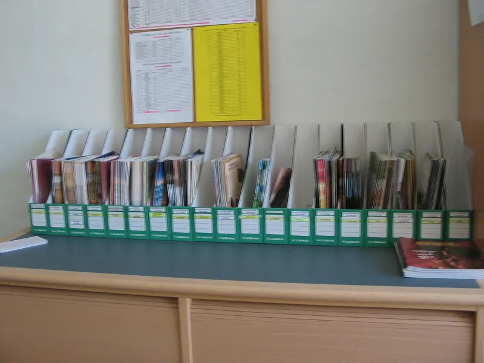

No good counter-argument has been published by the Watchtower.
The best manuscripts have Jesus say: "If you ask me anything in my name, I will do it." That is a warrant for praying to Jesus. Witnesses are taught that praying to Jesus is wrong.
Their Bible drops the word "me."
They convict themselves in print. Their stated base text is Westcott and Hort, which has "me." Their own Kingdom Interlinear prints "me" in the Greek line.
The 1984 Reference Bible footnote lists P66, Sinaiticus, Vaticanus, W, the Vulgate and Syriac as reading "ask me." The main text leaves it out anyway. The 2013 revision keeps the omission and drops the footnote.
The shorter reading is not a Watchtower invention. Codices A, D, K and L omit "me," and so does the Byzantine tradition.
Some Vulgate and Syriac copies do too. So does the King James Version, which nobody calls anti-Trinitarian.
They also argue that "ask me in my name" is odd. The context says to ask the Father in Jesus' name (John 14:13; John 15:16; John 16:23).
So "me" may be an early scribal addition.
The King James men used what existed in 1611. This committee had P66 and P75, which sit within decades of the writing.
They had their own base text open. They printed the better reading in their own footnote, then overruled it.
NA28 and UBS5 both keep "me."
Strong for you. A translation that follows Westcott and Hort in thousands of places, and leaves it in one, is not being led by the evidence.
"Your own 1984 footnote says the oldest manuscripts read 'ask me.' Why does the verse above the footnote not?"

Codices A, D, K and L drop 'me' too, and so does the King James.
The omission of me is not a Watchtower invention. It appears in a substantial manuscript stream. Codices A, D, K and L omit it, and so does the Byzantine tradition. So do some Vulgate and Syriac witnesses. So does the KJV itself, which reads 'If ye shall ask any thing in my name.' Nobody accuses the KJV of anti-Trinitarian bias.
Defenders also argue that 'ask me... in my name' is awkward. One asks the Father in Jesus' name, as the immediate context says at John 14:13, John 15:16 and John 16:23. So me may be an early scribal intrusion. On that view, internal coherence justifies the shorter reading even against the older manuscripts.
Strong for you. Their own footnote names the better reading; the text ignores it.
The KJV parallel fails. The KJV men followed the manuscripts available in 1611. The NWT committee had P66 and P75 in front of them, and their own base text. They documented the better reading in their own footnote, then overrode it.
The text-critical method the committee applies everywhere else points one way. Prefer the earliest and best witnesses. Prefer the reading that explains the others, since a scribe would delete me to harmonize with 14:13. The committee went the other way, in the sole direction their theology required.
When a translation follows Westcott and Hort in 7,000 places and abandons it here, the variable is not the evidence.